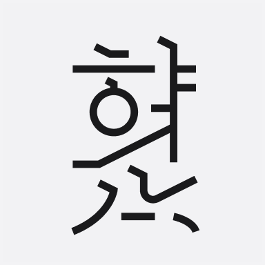

규칙적이고 기하학 구조 위에 곡선을 결합해 부드러움과 날카로움이 동시에 드러나는 표정을 의도했다.
'닿자'와 '홀자'가 연결되는 곡선 α의 속공간을 활용해 날렵한 인상 위에 부드러움이 느껴지도록 했다. 2
모든 글자의 배치는 '홀자'의 위치를 기준으로 정렬했으며, '홀자' 두께 ω를 기준으로, '보'의 두께를 1/2 비율로 설정해 대비가 크게 드러나도록 했다. 3
'첫닿자' β보다 '맺음닿자' γ의 비율을 약간 크게 설계해 시각적 무게 중심이 안정적으로 형성되도록 했다. 4


Thin 웨이트는 붓번짐을 최소화하고 기본 기울기 μ와 곡선 φ만으로 뼈대를 구성해, 얇은 선 두께를 유지하면서도 명조 특유의 표정이 드러나도록 의도했다. 6
'홀자' 두께 ω를 기준으로 ×1.7, ×2.6 비율로 확장해 Medium과 Bold를 설계했다.Medium 이상에서는 획 두께와 '붓 길' 대비를 활용해 흘림을 표현하는 레터링 실험으로, 기하학적 규칙 위 자연스러움을 표현하고자 했다. 무게를 키울 때 단순히 두꺼워 지는것이 아닌 뼈대 위 살이 점점 찌는듯한 생각을 가지고 표현했다. 7